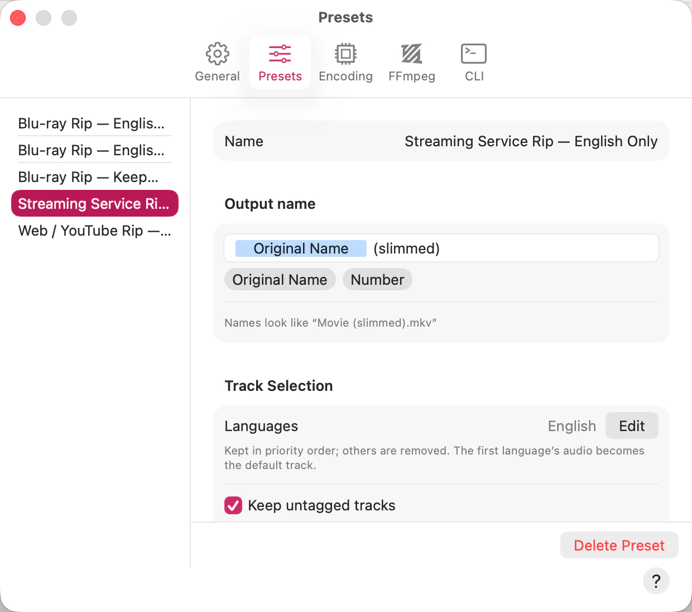
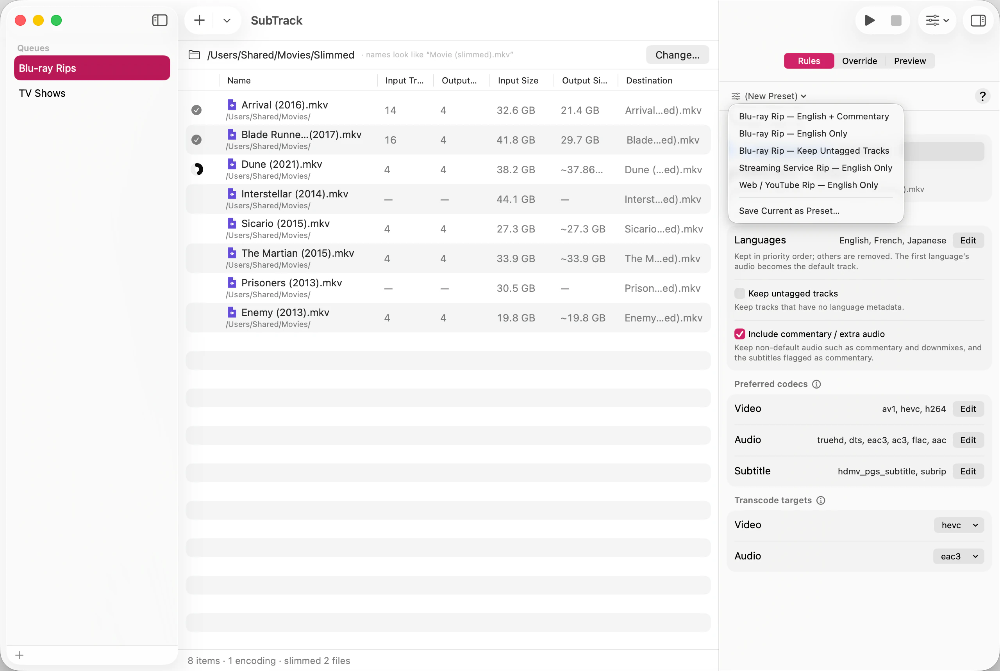

A preset is a named set of keep rules. Once you’ve worked out what a particular kind of rip needs, saving it means never working it out again.


To apply one, choose it from the same menu. The queue takes on its rules immediately.
This is the part of SubTrack most worth understanding, because it looks like a bug the first time you see it.
The preset menu doesn’t show what you last clicked. It shows which preset the current rules match. Apply “Blu-ray Rip”, then add one language, and the menu stops saying “Blu-ray Rip” — because the rules are no longer that preset’s rules. It says “(New Preset)” instead: you have a set of rules that isn’t any saved preset.
Remove that language again and the menu goes back to saying “Blu-ray Rip”, without you reapplying anything. Nothing was lost, and the preset was never modified — applying a preset copies its rules into the queue rather than binding the queue to it.
So “(New Preset)” is an invitation, not a warning: save these rules if you want to keep them.
SubTrack ships five starters, grouped by where the file came from — which is what decides both which tracks are worth keeping and which codecs are worth copying.
The setting that separates most of them is whether untagged tracks are kept. Studio discs tag everything, so the first two drop them as clutter; web and streaming rips very often ship a single untagged audio track that is the whole soundtrack, so the rest keep them. See Choose which languages to keep.
The starters are ordinary presets from the moment they appear — SubTrack neither protects nor restores them. Edit them freely, or delete the ones you don’t use.
Deleting a preset doesn’t disturb any queue. A queue that was using those rules keeps them — it holds a copy, not a reference — its preset menu just starts saying “(New Preset)”.